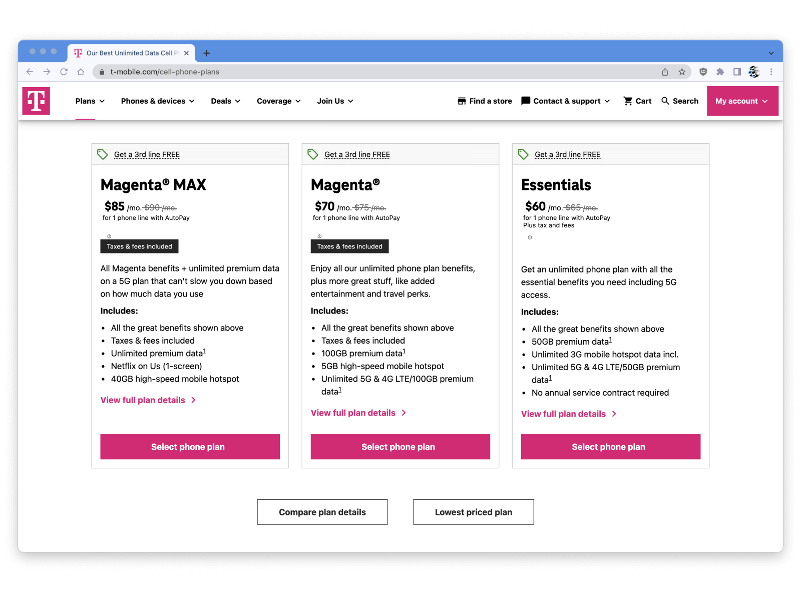
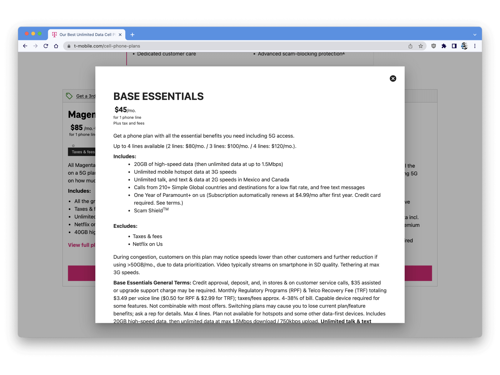

When a user makes a purchasing decision, they will often try to weigh up the price against the features and their personal needs. When comparing products, they may try to do this for each one before making a decision. If this evaluation activity becomes too difficult, users may give up and make a rash decision. The comparison prevention deceptive pattern abuses this behaviour by making the comparison as difficult as possible. When a user struggles, they are more susceptible to cognitive biases such as social proof, the authority bias or the default effect. This enables the provider to steer them towards a decision that generates more revenue, but may not be in the user's best interest.
In this example T-Mobile makes it difficult for users to compare prices and plans. Features are bundled in slightly different ways in each of the plans, requiring users to do some complex evaluation and mental arithmetic to weigh up the differences. Taxes and fees are included in two of the plan prices, but not included in the third. Since the taxes and fees are not shown for the third plan the user cannot deduce if it is better value or not. Numerous details about the plans are not shown on this page, requiring the user to click multiple times to "view full plan details" for each plan. Hidden at the bottom of this page is a link that says "Lowest priced plan". Unlike the other plans, no price or information is shown. The user must click on it. This brings up a lightbox modal in a different style, requiring the user to memorise the price and key features before returning to the previous page. Overall, the user may not bother with all the effort needed to identify and understand the two cheaper plans, and they may end up choosing one of the two more expensive plans, delivering extra revenue to the business even though it may not be in their best interest.
|  |  |
| Home | Dark Patterns | Addictive Design | Resources |